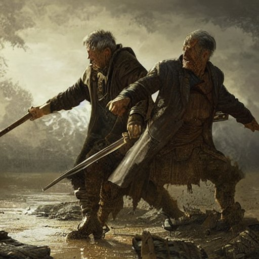

Você escolheu deixar os dois brigarem até o fim

Lord Grey e Bispo Benedict passaram horas batalhando, porém, no final, os dois vieram a falecer. Lord Grey se afogou em seu próprio sangue, e Bispo Benedict sofreu de uma falência total dos orgãos.
Agora, sem líder, o povo se rebelou e uma guerra começou.